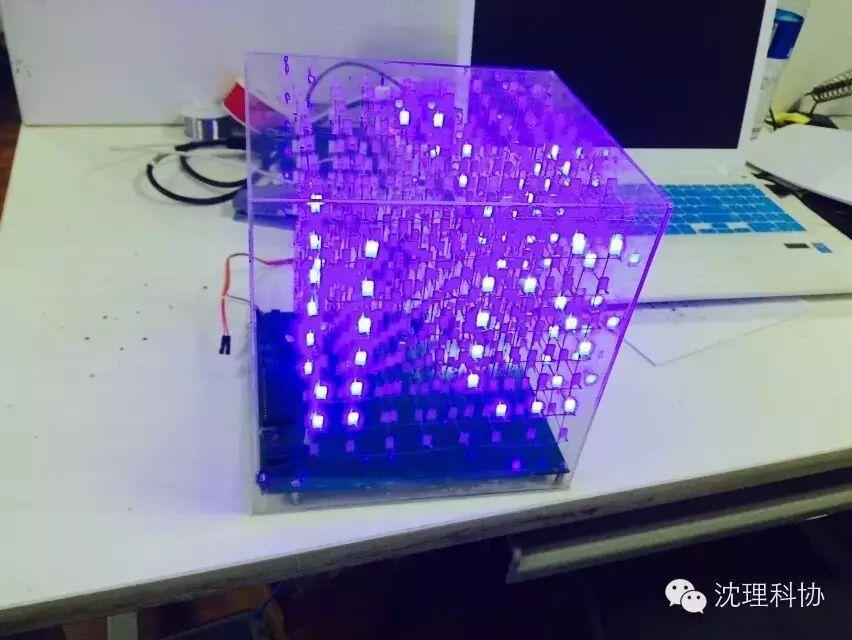
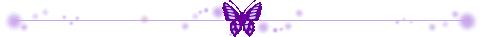
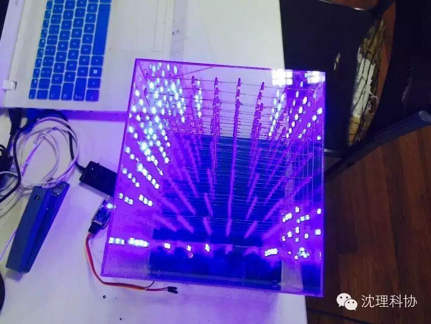
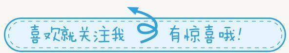

光立方
在接下来的几天里小编将为大家持续更新我们协会小伙伴们的作品结晶，今天首先介绍伍鑫学长带来的8*8*8光立方，颜色美轮美奂，形式各种各样，小编第一次看见顿时眼前一亮，详细视频请点击下方链接。（友情提醒在wifi下观看视频）
SEE MOREsee →
附上几张照片





关注沈理科协（微信：sylgkx）
每一次转发和分享都是对我们的肯定。

您看此文用·秒，转发只需1秒呦~
点击文末阅读原文可观看视频